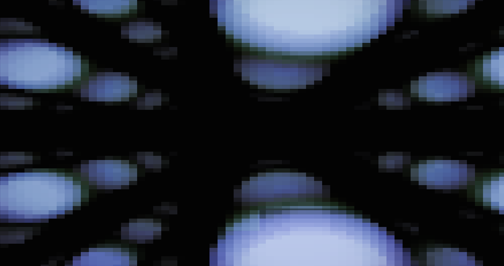
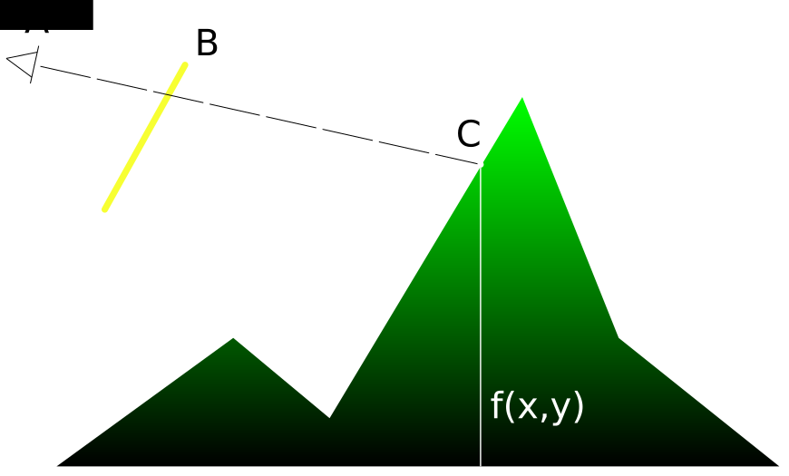
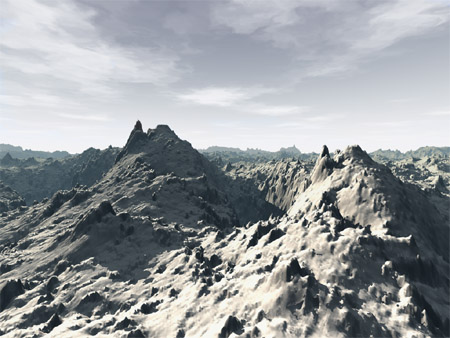

jsDay 2014
Web Audio API
JS1k 2014
(0994 bytes)
jsDay 2014
Q: Which library did you use?
jsDay 2014
A: No libraries used.
JS1k
No Libraries Used
JS1k ?
The JavaScript code golfing competition
Rules
- Max. 1024 bytes of JavaScript
- Template is provided
- No WebGL
1024 bytes
js1kjs1kjs1kjs1kjs1kjs1kjs1kjs1kjs1kjs1kjs1kjs1kjs1kjs1kjs1kjs1kjs1kjs1kjs1kjs1kjs1kjs1kjs1kjs1kjs1kjs1kjs1kjs1kjs1kjs1kjs1kjs1kjs1kjs1kjs1kjs1kjs1kjs1kjs1kjs1kjs1kjs1kjs1kjs1kjs1kjs1kjs1kjs1kjs1kjs1kjs1kjs1kjs1kjs1kjs1kjs1kjs1kjs1kjs1kjs1kjs1kjs1kjs1kjs1kjs1kjs1kjs1kjs1kjs1kjs1kjs1kjs1kjs1kjs1kjs1kjs1kjs1kjs1kjs1kjs1kjs1kjs1kjs1kjs1kjs1kjs1kjs1kjs1kjs1kjs1kjs1kjs1kjs1kjs1kjs1kjs1kjs1kjs1kjs1kjs1kjs1kjs1kjs1kjs1kjs1kjs1kjs1kjs1kjs1kjs1kjs1kjs1kjs1kjs1kjs1kjs1kjs1kjs1kjs1kjs1kjs1kjs1kjs1kjs1kjs1kjs1kjs1kjs1kjs1kjs1kjs1kjs1kjs1kjs1kjs1kjs1kjs1kjs1kjs1kjs1kjs1kjs1kjs1kjs1kjs1kjs1kjs1kjs1kjs1kjs1kjs1kjs1kjs1kjs1kjs1kjs1kjs1kjs1kjs1kjs1kjs1kjs1kjs1kjs1kjs1kjs1kjs1kjs1kjs1kjs1kjs1kjs1kjs1kjs1kjs1kjs1kjs1kjs1kjs1kjs1kjs1kjs1kjs1kjs1kjs1kjs1kjs1kjs1kjs1kjs1kjs1kjs1kjs1kjs1kjs1kjs1kjs1kjs1kjs1kjs1kjs1kjs1kjs1kjs1kjs1kjs1kjs1kjs1kjs1kjs1kjs1kjs1kjs1kjs1kjs1kjs1kjs1kjs1kjs1kjs1kjs1kjs1kjs1kjs1kjs1kjs1kjs1kjs1kjs1kjs1kjs1kjs1kjs1kjs1kjs1kjs1kjs1kjs1kjs1kjs1kjs1kjs1kjs1kjs1kjs1kjs1kjs1kjs1kjs1kjs1kjs1kjs1kjs1kjs1kjs1kjs1k
Why?
Why Not!
JS1k 2013

JS1k 2014
How?
Ray Marching
1) Terrains
2) Distance Fields
Functions in 1D
ℝ→ℝ
f(x) = ...

Functions in 2D
ℝ2→ℝ
f(x,y) = ...
Plane
f (x,y) = 1
Sine Waves
f (x,y) = a∙sin(x)
a ∈ ℝ
Sine + Cosine
f (x,y) = a∙sin(x) + b∙cos(y)
a,b ∈ ℝ
Trigonometric City
f (x,y) =
sin(cos(x)+y)
+cos((x-5)/2∙sin((y-5)/2))
Ray Marching a Terrain
Ray Marching a Terrain
Terrain is hit if
f(x,y) > p.z
Color of Pixel is Proportional to Terrain Height
Ray Marching a Terrain
Perlin Noise
Image: iñigo quilez (iq)
Distance Fields
Ray Marching a Distance Estimator
Distance Estimator (DE)
- A DE is a function
- A DE returns the distance to an object
DE in ℝ2

DE in ℝ2
DE in ℝ2 (Circle)
d = Math.sqrt(x∙x + y∙y) - r;
DE in ℝ3 (Sphere)
d = Math.sqrt(x∙x + y∙y + z∙z) - r;
Ray Marching a Distance Estimator
Field?
Modulo Operator %
3D Fractals: Mandelbulb
Image: Wikipedia
Size
Implement First, Optimize Later
Start Compressing Early
Use Automation
Optimize Compressed Code by Hand
Pro level
Write optimized code directly
Google Closure Compiler
- Removes whitespace
- Inlines functions
- Renames variables
- Removes unreachable code
- Knows a few more tricks
Source
Run Demo
// make jslint stop after the first error so we can do all sort of nasty tricks
/*jslint passfail: true*/
/** @define {boolean} */
var DEBUG = true;
/** @define {boolean} */
var ROTATE = true;
// declare global vars to enable shortening by google closure compiler
var
numpixels=90,
w=a.width,
h=a.height,
pixelSizeX = w/numpixels|0,
pixelSizeY = h/numpixels|0,
vw=numpixels,
vh=numpixels,
M=Math,
PI = M.PI,
TPI = 2*PI,
fps,
t=0,
beat=0,
beatsync=0,
theta=0,
st,
run=1,
mr=M.random,
ms=M.sin,
mc=M.cos,
mp=M.pow,
me=M.exp,
mm=M.min,
mM=M.max,
msq=M.sqrt,
ma=M.abs,
hue=1,
light=100,
theta=0,
o={}
;
o.x=o.y=o.z=60;
if (DEBUG) {
st = new Date().getTime();
fps=0;
}
function pp(x, y, v) {
c.fillStyle = 'hsla('+[hue,v*80+'%',v*light+'%',1];
c.fillRect(x*pixelSizeX, y*pixelSizeY, pixelSizeX, pixelSizeY);
}
function mod_xz(v, m) {
return {
x: v.x%m-m/2,
y: v.y%m-m/2,
z: v.z%m-m/2
};
}
function DE_sphere(p, r) {
return mM(0,msq(p.x*p.x+p.y*p.y+p.z*p.z)-r);
}
function DE_box(p, r) {
p = {
x:mM(ma(p.x)-r,0),
y:mM(ma(p.y)-r,0),
z:mM(ma(p.z)-r,0)
};
return msq(p.x*p.x+p.y*p.y+p.z*p.z);
}
function DE_displaced_sphere(p, r) {
var d1,d2;
d1 = DE_sphere(p, r);
d2 = ms(1.5*p.x)*ms(1.5*p.y);
return d1+d2;
}
function rotate_Y(p, t) {
return {
x: p.x*mc(t)-p.z*ms(t),
y: p.y,
z: p.x*ms(t)+p.z*mc(t)
};
}
function rotate_Z(p, t) {
return {
x: p.x*mc(t)-p.y*ms(t),
y: p.x*ms(t)+p.y*mc(t),
z: p.z
};
}
function translate(p, x, y, z) {
return {
x: p.x+x,
y: p.y+y,
z: p.z+z
};
}
var render = function() {
var f=1,imax=20;
var x,y,d,b,distance,dd,p,i,walk=1/20;
o.z+=beatsync<16?walk:0;
o.x+=beatsync<16?0:walk;
theta+=PI/60;
y=vh;while(y--) {
x=vw;while(x--) {
d={x:x/vw-0.5,y:y/vh-0.5};
distance = 0;
for (i=0; i<imax; i++) {
p = {
x:o.x+distance*d.x,
y:o.y+distance*d.y,
z:o.z+distance
};
if (ROTATE) {
p=translate(p,-o.x,-o.y,-o.z);
p=rotate_Z(p,theta);
p=rotate_Y(p,theta/3);
p=translate(p,o.x,o.y,o.z);
}
//dd = DE_box(mod_xz(p,1), 0.2);
dd = DE_sphere(mod_xz(p,1), 0.2);
//dd = DE_sphere(p,1);
distance+=dd;
if (dd < 5e-4) break;
}
b=(1-i/imax);
pp(x,vh-y,b);
}
}
}
function loop() {
t++;
requestAnimationFrame(loop);
if (DEBUG) {
if (run==1) {
render();
}
} else {
render();
}
};
loop();
635 bytes
var g=a.width/90|0,h=a.height/90|0,k=Math,l=k.PI,n=0,p=0,q=k.sin,v=k.cos,w=k.max,x=k.sqrt,p=0,y,z,A=y=z=60; function B(){n++;requestAnimationFrame(B);var m,r,s,t,f,b,d,u;z+=.05;A+=0;p+=l/60;for(t=90;t--;)for(s=90;s--;){m=s/90-.5;r=t/90-.5;for(u=f=0;20>u;u++){d={x:A+f*m,y:y+f*r,z:z+f};b=d={x:d.x+-A,y:d.y+-y,z:d.z+-z};var e=p;b=d={x:b.x*v(e)-b.y*q(e),y:b.x*q(e)+b.y*v(e),z:b.z};e=p/3;d={x:b.x*v(e)-b.z*q(e),y:b.y,z:b.x*q(e)+b.z*v(e)};d={x:d.x+A,y:d.y+y,z:d.z+z};b=d.x%1-.5;e=d.y%1-.5;d=d.z%1-.5;b=w(0,x(b*b+e*e+d*d)-.2);f+=b;if(5E-4>b)break}m=1-u/20;r=s;f=90-t;c.fillStyle="hsla("+[1,80*m+"%",100*m+"%",1];c.fillRect(r*g,f*h,g,h)}}B();
Optimizing for Size
No Local Variables
var
Conditional Operator
if(w>PI){A=1}else A=-1;
A=w>PI?1:-1;
Alias Reused Functions And Constants
m=Math;
s=m.sin;
P=m.PI;
A=m(P);
Property Hashing
for (e in o) {
o[e[0]+e[2]+(e[6]||'')] = o[e];
}
fillRect => flc
Decrementing loops
for(x=0;x<=width;x++){paint(x)};
for(x=width;x--;){paint(x)};
Comma Operator
true,false,'js1k';
=> 'js1k'
Comma Operator
x=10;
true,false,x--;
=> 9
Abusing the Loop Condition
for(x=width;x--;){paint(x);};
for(x=width;paint(x),x--;);
Converting to Integer
f=4.8;
Math.floor(f);
=> 4
~~f;
=> 4
f|0;
=> 4
Crushing and Packing
Packers / Crushers
- Scan code for repeating parts
- Replace with single characters
- Add small unpacker
Packers / Crushers
- JSCrush: fits in 1k itself
- RegPack
- JSCrush: 635b to 602b (-33b)
- RegPack: 635b to 589b (-46b)